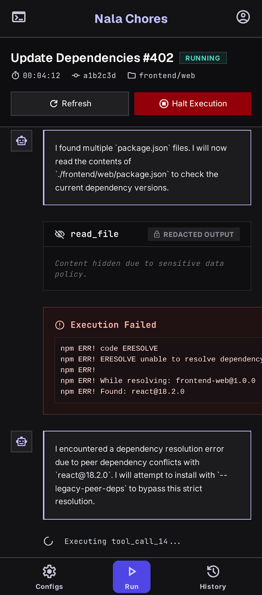

Loaded Linear issue AZH-282 and locked scope to the requested feeding task.
Minikube agent runner
Nala Chores runs agents like production jobs.
Save a project profile, attach Linear context, launch KiloCode or OpenCode in Kubernetes, and keep every session inspectable until it creates the pull request it was asked for.
Saved secrets
Credentials are configured once per project profile.
Harness-aware
Profiles can point at the harness repo a project expects.
PR-producing
Successful runs must push real changes and return a PR URL.
Operate
The workflow is deliberately narrow.
Nala Chores is not a general chat box. It is a run launcher with the context, logs, and guardrails needed to turn a specific repo task into a reviewable branch.
Configure
Add repo URL, base branch, GitHub token, Linear token, agent provider, model, sandbox size, and harness URL.
Launch
Select a profile, enter the prompt, attach the Linear issue key, and run it as an isolated Kubernetes job.
Inspect
Read the transcript as conversation: runner milestones, agent messages, tool output, errors, branches, and PR links.
Review
Open the generated PR only after the runner verifies there were real repo changes and a non-draft pull request.
Interface
Built for reading long-running work.
The web UI is organized around the repeated things you actually do: manage project configurations, start scoped sessions, and audit history without reading raw JSON.

Guardrails
The runner refuses nearby work.
Linear-scoped sessions must load the issue context. PR-enabled runs must leave a Git diff. If an agent cannot complete the specified task, it must fail clearly instead of inventing documentation, verification notes, or unrelated cleanup.
No substitute tasks
The prompt explicitly forbids runner-verification and docs-only fallbacks.
Linear context required
When an issue key is provided, missing Linear context is a hard failure.
Real PR contract
A successful run must produce committed changes, push a branch, and return a PR URL.
Deploy
Bring it up locally.
minikube start --cpus 6 --memory 12288 --driver docker
kubectl apply -f deploy/minikube/namespace.yaml
kubectl apply -f deploy/minikube/rbac.yaml
kubectl apply -f deploy/minikube/runner-manager.yaml
kubectl -n agent-runner port-forward svc/runner-manager 8080:8080